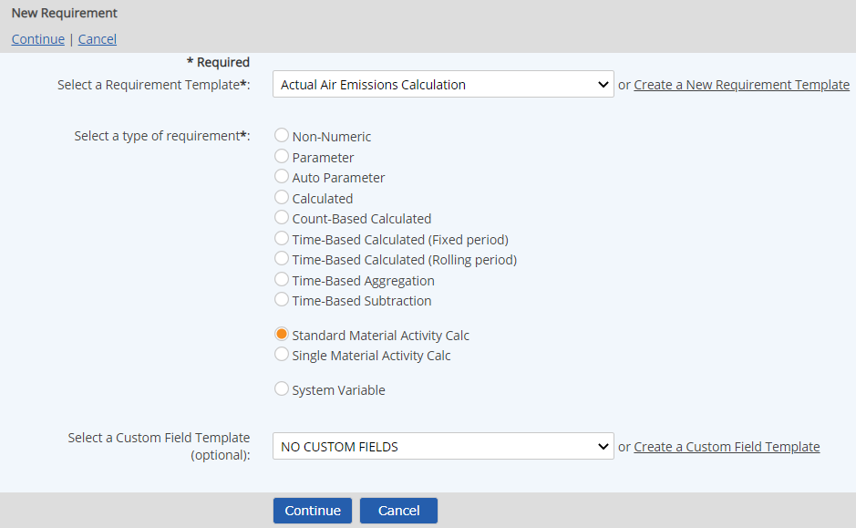
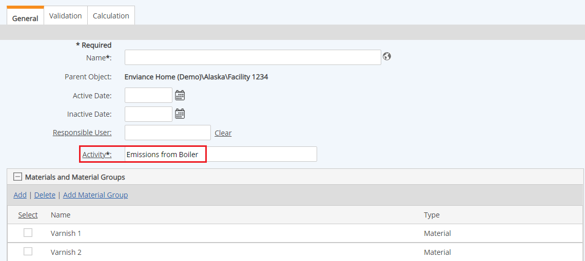
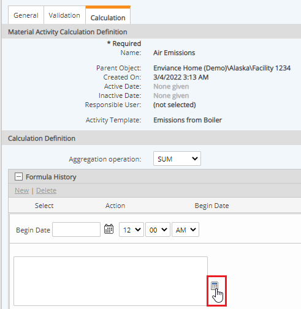
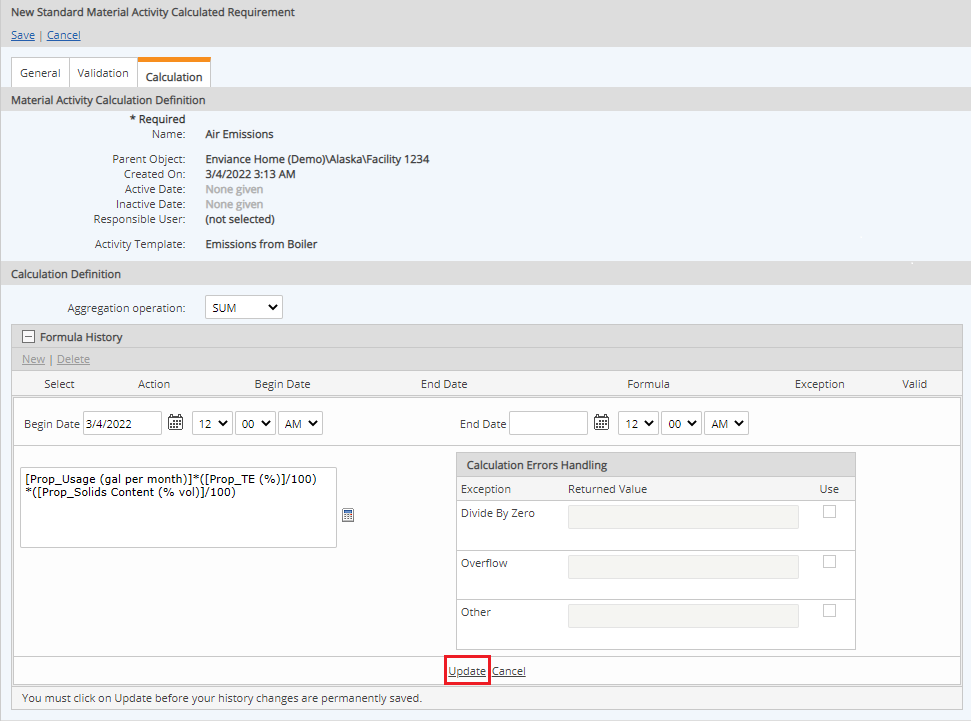

Before you can create a Material Activity Calculated Requirement, you need to define, at minimum:
One or more materials to be used in the calculation. Each material must have at least one chemical with defined chemical concentration. See Materials and Chemicals
An Activity containing at least one Specific Use Variable. Data entry on the specific use variable is the event that triggers the Material Activity calculation. See Activities and Activity Specific Use Variables
To create a new Material Activity Calculated Requirement:
For the requirement type, select Standard Material Activity Calc.
The Single Material Activity Calc is not recommended, as it restricts the calc to one material and is less flexible in the long run.
Optionally, you may select a Custom Field Template. See Custom Field Templates.
Select Continue.

Select Materials or Material Group to add one or more materials to be used.

Other fields include:
Requirement Source: In this section, you can further define the driver for the requirement. (This section is related to the Requirement Template.)
Description: This section contains optional information:
Expected Frequency: See Parameter Field Definitions.
Relations: Associated Documents, Citations and Tags (see Tag Schemes and Tags) associated with the requirement.
Choose the Aggregation operation for the MAC.
The Aggregation Type defines the type of aggregation to be performed in the calculation. See MAC Aggregations in Formulas and Material Data Lines and Data Batches.
Click the plus sign (+) to expand the Formula History section.
Click New to define a new formula.
Click the calculator button to define the formula. 
Use the calculation builder to build the formula.
The Calculator has tabs for the various components you can use in the formula. See Using the Calculation Builder for MACs.
After you have defined the formula, click Save.
The formula will be validated and any errors will be displayed.
You can re-enter the calculator to correct the formula, or type directly in the formula window.
Select a Begin Date for the formula.
Optionally, you may define Calculation Errors Handling.
See Field Definitions for Calculated Requirements for more information.
Click Update. 
In the Limits section, you can set optional regulatory and internal limits for the requirement and associate tasks when limits are exceeded.
A Chemical List may be used to check regulatory limits against those established in a specific regulatory list. See Set MAC Regulatory Limits Using a Chemical List.
Optionally, select the Validation tab to check the validity of the formula for the associated materials before proceeding.
The system attempts to validate the calculation for all the secondary and tertiary formula based properties associated with the materials. If the formulas are valid, the status is TRUE. If any formula values are invalid, the status will be FALSE and the invalid components are shown in red. Select a material from the dropdown list to check its validity.
All formulas that are required in the MAC calculation must be valid in order to save the requirement. However, if a formula is invalid, but is not used in the MAC calculation, the requirement may still be saved.
After reviewing the information, select Save, then Confirm to save the Requirement.
To test the calc, enter data by selecting the parent object (right click and choose Data > Enter/Edit). After data has been entered on at least one Specific User Variable, the calculation is triggered and the calculated data can then be viewed in the system.